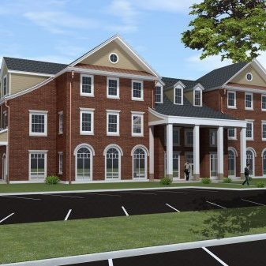

FarmHouse

President: Cameron Earlywine | (606)-748-7294 | cameron.earlywine@uky.edu
Recruitment: Ben Taylor | (502)-435-8363 | bpta222@uky.edu
67 Members
GPA: 3.0
Chapter House Address: 420 Hilltop Avenue, Lexington, KY 40508
Major community service, chapter and philanthropy events:
FarmHouse is involved on the UK Campus, Lexington Community, and with national
organizations on service and philanthropic projects.
Recent Awards:
Excellence in Social Development (2013)
Excellence in Recruitment and Retention (2013)
National History:
FarmHouse Fraternity is what it is by reason of the faithful, loyal, and
enthusiastic efforts of members of the fraternity. Whatever greatness it
may boast, whatever influence it wields, whatever reputation it may have,
all of these and each of these are to be credited to the members of the
organization.
In order to understand the development and history of FarmHouse Fraternity, we must keep clearly in mind what kind of social order existed on the University of Missouri campus during the time of its birth and infancy.
FarmHouse was founded as a professional agriculture fraternity on April 15, 1905 by seven men at the University of Missouri, when they had met at a Young Men's Christian Association (YMCA) bible study and had decided that they wanted to form a club. A second chapter, founded independently of the Missouri chapter but sharing the same ideals, was founded at the University of Nebraska in 1911. After communication between the two groups, a third chapter was founded at the University of Illinois in 1918.
FarmHouse as a national organization became a reality early in 1921 when the Constitution and By-Laws were approved by each of the active houses, and they then gave up some of their individuality and became "chapters" of the "greater" FarmHouse. FarmHouse had taken on a new meaning.
Chapter History:
Harold K. Wilson, Executive Secretary of FarmHouse, wrote Dwight M. Seath,
IA'27, in April, 1950, asking that he take the leadership in establishing a
chapter at the University of Kentucky. Dwight wrote that he was too busy getting
unsettled in his relatively new position as head of the dairy program at
Kentucky to undertake this additional chore. He stated, however, that he had
an interest in establishing a chapter at Kentucky. He felt a personal obligation
to assist Harold, whom he had enjoyed having as a roommate at Iowa State
University when a chapter was being established there.
The National office apparently took little notice of the "too busy" excuse. Early in May Dr. Seath received a letter from Joseph Ackerman, National President, stating that he would be in Lexington on May 14. He asked that a meeting be called to assemble all faculty members who had been members of other FarmHouse chapters, and a nucleus of outstanding Kentucky students and faculty who might help start a Kentucky Chapter of FarmHouse.
Chapter Colors: Green and Gold